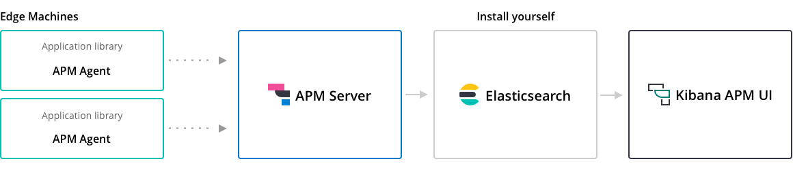

APM Server binaryedit
This guide will explain how to set up and configure the APM Server binary.
Prerequisitesedit
First, see the Elastic Support Matrix for information about supported operating systems and product compatibility.
You’ll need:
- Elasticsearch for storing and indexing data.
- Kibana for visualizing with the APM UI.
We recommend you use the same version of Elasticsearch, Kibana, and APM Server. See Installing the Elastic Stack for more information about installing these products.
